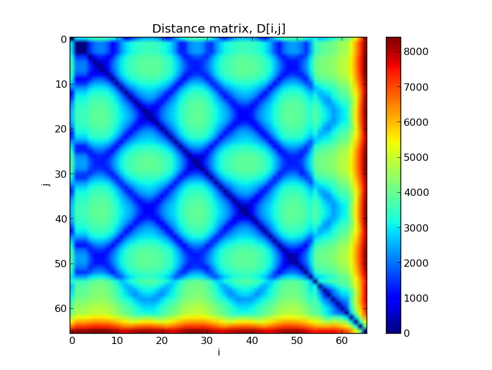
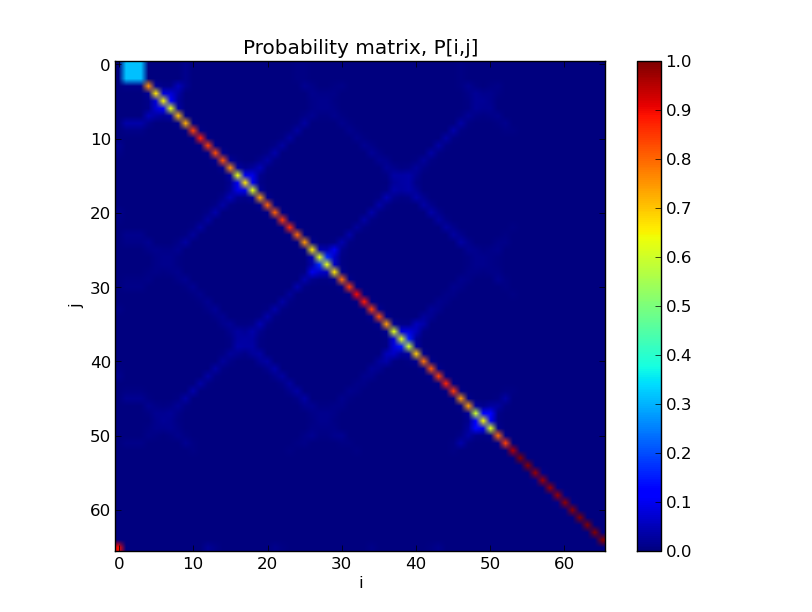
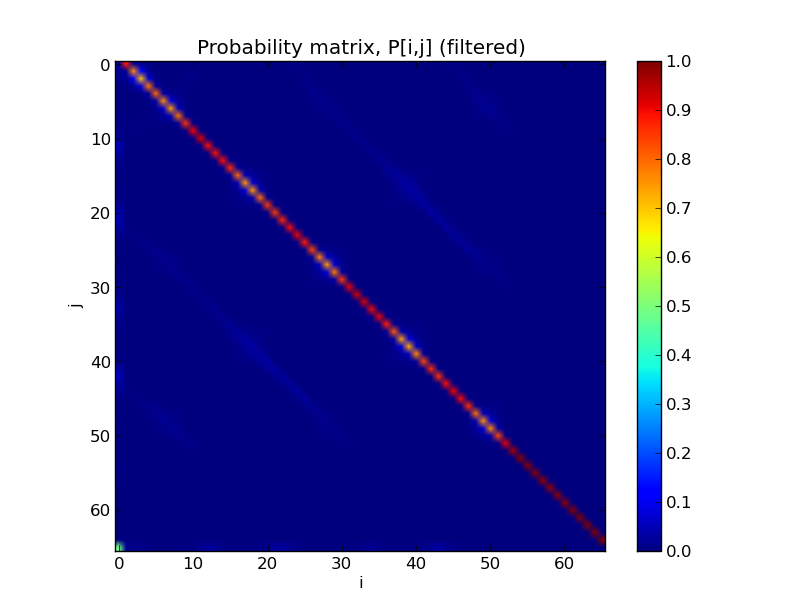
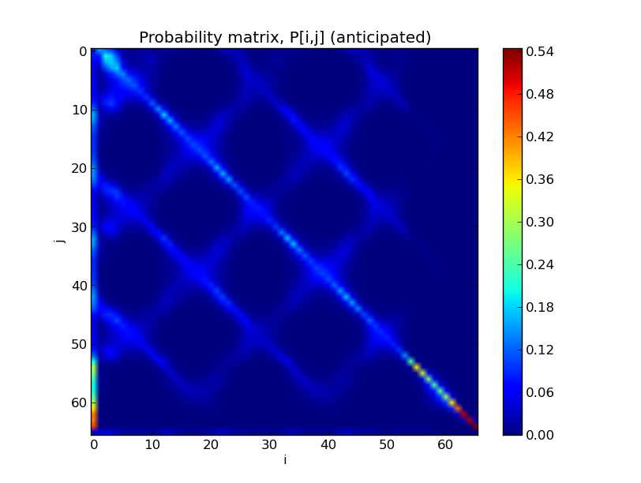
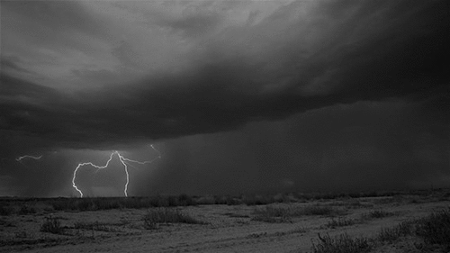
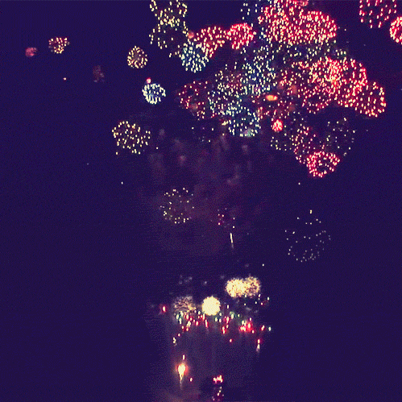
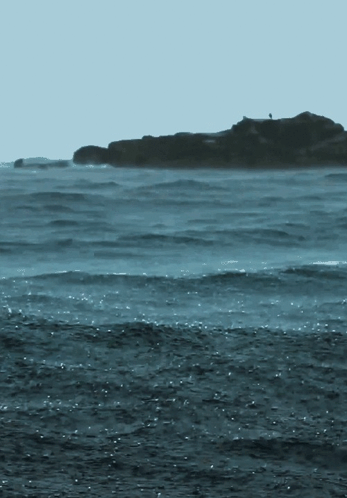

{kind=link}
Overview
A video texture is a continuous stream of images captured from individual frames of an input video sequence. Transitions between frames are determined by probability distribution over frames where frames that are similiar to each other have a higher probability of transition. First, the L2 distance between each pair of frames is calculated by summing over the squares of pixel differences.
{kind=link}
Next, the distances are converted into probabilities using P = exp(d/sigma) where sigma is a small multiple of the average distance.

{kind=link}
To preserve dynamics, the distance matrix is filtered with a diagonal kernel consisting of binomial weights. The resulting probability matrix shows that transitions are only occur when entire subsequences have similar frames.

{kind=link}
To avoid dead-ends on the video sequence, an extra term is added to the distance matrix which encapsulates the anticipated future costs of a transition. The future costs term is computed iteratively using a Q-learning technique.

{kind=link}
Results
Shown below are the results of running the algorithm. The animated images on the left are frames extracted from the original video sequence. The animated images on the right are frames generated from the algorithm.| Original | Result |
|  | |
 |
 |
|  |  |
|  |  |
 |
 |
 |
 |
 |
 |
{kind=link}
{kind=link}
{kind=link}
Cross Fading
Challenges:
- Processing time increases by N^2 for number of frames.
- Paper does not mention whether D[i,j]=0 needs to be considered when finding the minimum.
- Using only a small number of frames causes the transitions to be jerky.
- Cross-fading causes blurring in the frames
References
Video Textures